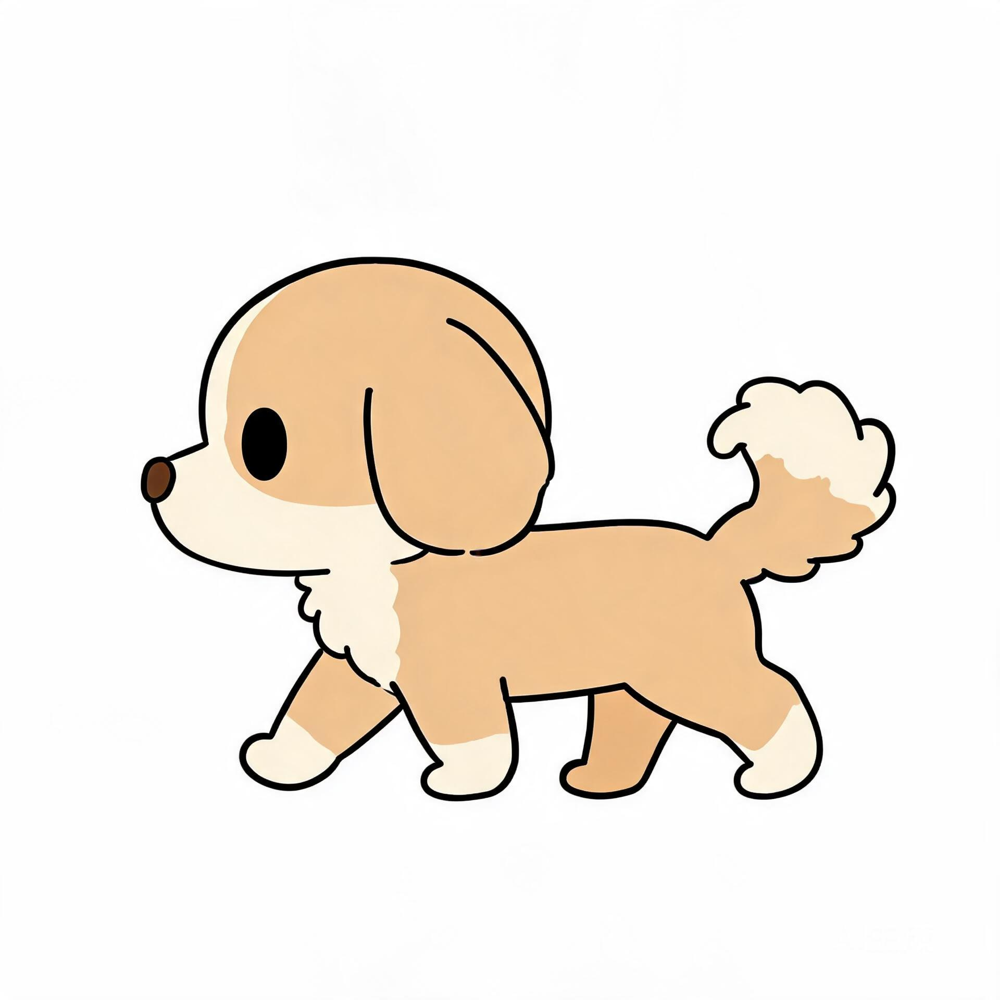

我的宠物：让幼犬在卡片里走起来
01–06 是 dog / juvenile（幼犬） 的方案，已按此落地并上线；07 是新增的 dog / growing（成犬）设计与素材规划，只出设计稿，未生成素材、未改配置。 画板按真实舞台尺寸 1:1 还原（280px 容器 + 15px 内边距 = 250px 画布），可直接对照实现。
| 1:1 立绘 | outpainting 扩画布：以现有 3:4 立绘为主体，只补画左右两侧背景，主体像素与画风完全不变 | 占屏比例与现在一致；不重绘、不换姿势 |
| 走动范围 | 整条舞台左右走，与移动端一致；左右各 12% 为停止区 | 行程 190px（250px 画布的 76%） |
| 移动端影响 | 接受两端共用同一个 imageUrl，不拆 URL |
移动端 180pt 画框内使用同一张 1:1 图 |
场景比例还原
1440 桌面与 375 窄屏两个画板，尺寸为真实 CSS px（舒适档：根字号 20px）；桌面是页头导航 + 左侧账户菜单，移动端没有页头导航，只有底部 tab。
- 1舞台容器 280px：`max-w-[280px]` + `aspect-square`，当前是写死 px。建议改为 `max-w-[14rem]`，随密度缩放。
- 2左栏 371px：账户中心 `11rem` 侧栏 + `gap-5` 后，`5fr/7fr` 栅格算出；它决定了 280px 舞台两侧还剩多少余量。
- 3内边距 15px：`p-3` 在舒适档 = 0.75rem = 15px，舞台实际画布 = 280 − 30 = 250px。
- 4右栏 519px：统计 / 进化路线 / 最近喂养。本次不改动，仅作比例参照。

小柴 · Lv.3
精神满满375 窄屏：移动端为「状态栏 / 页面内容 / 底部 tab」三段结构，没有页头导航（品牌行与「个人信息 / 我的教材 / 我的宠物 / 学习记录」这组竖排入口只属于桌面账户中心）。内容宽 375 − 40 = 335px，卡片内宽 295px，舞台仍是 280px，画布 250px；底部 4 个 tab（首页 / 学习 / 排行榜 / 我的）固定高 50px，滚动内容需为其预留高度。
| 项 | 紧凑 18px | 标准 20px | 宽松 22px |
|---|---|---|---|
| 舞台（现状 280px 写死） | 280px | 280px | 280px |
| 舞台（建议 14rem） | 252px | 280px | 308px* |
| 内边距 0.75rem（p-3） | 13.5px | 15px | 16.5px |
| 画布（舞台 − 2×p-3） | 225px | 250px | 275px* |
| 行走速度 3.6rem/s | 64.8px/s | 72px/s | 79.2px/s |
| 走完整条舞台耗时 | ≈3.5s | ≈3.5s | ≈3.5s |
- 宽松档 14rem = 308px，在 375 窄屏会顶破卡片内宽 295px，因此实现必须是
w-full max-w-[14rem]（先让满，再封顶），标注 * 的两格实际会被容器压到 295px / 262px。 - 密度切换时舞台与位移会一起缩放，但「走完整条舞台耗时」保持恒定，观感才不别扭——所以速度单位用 rem/s，而不是 px/s。
五个动画状态
每个画板 250px 真实画布；缩略条示意关键帧分布

左界 · 停 右界 · 转身 行程 190px · 锚点 (256,470)
- 幼犬是 1–9 级，升到 10 级才进化到「成犬」，本阶段验收基本触发不到；链路保留、不重做素材。
- 真正会看到的是 feed / happy / walk / idle 四个；evolve 只需保证「不被打断、播完回落到新阶段 idle」。
尺寸与锚点规范
512×512 画布 · 脚底锚点 · 安全边距 · 镜像规则
| 逻辑画布 | 512 × 512，透明背景，无地面/阴影 |
| 主锚点 | (256, 470) = 水平居中、距底 42px（8.2%） |
| 主体高度 | 约占画布 86%（≈440px），正/侧/迈步三图顶部差 ≤2px |
| 主体宽度 | ≤410px，左右各留 51px（≈10%）行走安全边 |
| 额外安全边 | 四周 24px 内不放描边，避免缩放被切 |
| 镜像 | 朝左为默认；朝右用 scaleX:-1，锚点不变 |
| 导出 | 母版 PNG 1024 → WebP 512，单帧 ≤40KB |
左右各 12% 是停止区：宠物中心点进不去，保证身体不越出卡片、不压到下方文字。 边界处触发转身：停 120ms → 转身淡化 → 反向起步（延迟 80ms）。
素材对照区
幼犬单阶段共 10 项；虚线框为待生成/待重出
sharpbucket/pets/dog/juvenile/| # | 文件 | 尺寸 / 格式 | 数量 | 用途与要求 | 状态 |
|---|---|---|---|---|---|
| 1 | image-v2.webp |
1024×1024 · 透明 WebP | 1 | 1:1 正身立绘，outpainting 扩画布（主体像素不变，仅补左右两侧）；六处共用（舞台、进化路线缩略图、领养页、feed/evolve 底图、移动端）。不覆盖旧文件，≤150KB | 待出图 |
| 2 | motion/front.webp |
512×512 · 透明 WebP | 1 | 正面站姿，由 #1 等比缩放；manifest front.body |
待生成 |
| 3 | motion/side.webp |
512×512 · 透明 WebP，朝左 | 1 | 侧身站立，side.body，facing:"left" |
待生成 |
| 4 | motion/walk-a.webp |
512×512 · 透明 WebP，朝左 | 1 | 迈步 A（前腿前伸） | 待生成 |
| 5 | motion/walk-b.webp |
512×512 · 透明 WebP，朝左 | 1 | 迈步 B（后腿抬起）；可与 A 镜像后修腿 | 待生成 |
| 6 | motion/idle.json |
512 画布 · 90f/30fps | 1 | 正面呼吸；沿用 94→100→94 曲线，锚点改到 512 坐标 | 待改编 |
| 7 | motion/walk.json |
12f / 12fps | 1 | 3 张图轮播 + 身体上下 2px 起伏 | 待新建 |
| 8 | motion/happy.json |
24f / 24fps | 1 | 下压 8% → 上跳 6px → 回落 + 倾斜 4° | 待新建 |
| 9 | motion/manifest.json |
JSON · version 2 | 1 | 汇总 front/side actions、walkSpeed: 3.6、scale 对齐值 |
待新建 |
| 10 | motion/legacy-image-3x4.webp |
1680×2240 | 1 | 旧立绘备份，仅用于回滚 | 复制即可 |
现有 image.webp（1680×2240）→ outpainting 补边
motion/front.webp
512 · 正面
正面站姿（#2）
dog-juvenile-side-a.jpg：仅参考姿态，画风需重做
dog-juvenile-side-b.jpg：同上，姿态参考
- 仓库里已有的 `dog-juvenile-side-a/b.jpg` 是扁平粗描边画风，与当前写实萌系立绘（紫柴、红项圈）不是同一套美术，不能直接当成交付素材，只能作为「姿态/比例」参考。
- 现有 `motion/` 下的 front-stand / side / turn 也是同一批旧画风，本阶段用新素材覆盖，不沿用。
优先级与交互时序
高优先级立即打断低优先级；单次动作播完必须回落
状态变体（5）本阶段不接动作，只保留位置：等后续做 sleep / hungry 时直接插进阶梯，不需要改状态机结构。
| 打断 | 高优先级可立即打断低优先级；evolve 不可被任何动作打断 |
| 排队 | 同时到达最多缓存 1 个；被更高优先级覆盖时丢弃 |
| 回落 | 单次动作结束 → 当前状态的常驻动作（本阶段恒为 idle） |
| 不响应 | satiety 数值变化、经验变化只更新 HUD，不进动作队列 |
从而保证：喂食时不会被饱腹度刷新打断、升级动画不会被「正在走」抢占、连点不会叠播。
若本次触发 stageUp：feed 播完 → 刷新出新阶段素材 → evolve 2.0s → 新阶段 idle。幼犬阶段几乎不会发生。
连点：第二次点击在 happy 播放中到达 → 丢弃（不排队、不重播），避免一直在兴奋状态。
sleep／hungry 的专属动作属于最后一阶段；本阶段到「胶囊变色 + 气泡」为止，保证状态可见即可。
规范卡
颜色 / 字号 / 依赖 / 降级，四件事写死
#10b981#0b7f58#ddf6ea#ffffff#f7fbf9#dde7e1#4f6b5e#f59e0b宠物动画本身不引入新色：舞台无底色，只用卡片 surface；走动边界/锚点属于标注层，不进产品界面。
- 舞台宽度：
w-full max-w-[14rem]；内边距p-3（0.75rem）。 - 走速：
3.6rem/s，位移换算实时读根字号，不缓存 px。 - 停止区：舞台宽的
12%（比例而非 px）。 - 按钮/文字：沿用现有
text-xs / text-sm / text-base，不新增字号档。 - 动画素材尺寸（512）属于资源规格，不是布局尺寸，不受 rem 约束。
- 禁用：
width: 280px、translateX(72px)、bottom: 30px这类写死值。
- 继续使用已有
lottie-web@5.13.0；不引入 GSAP / Framer Motion / PixiJS / 雪碧图工具。 - 位移用 CSS
transform: translateX()，动画仍在 Lottie 内。 - 降级链：
manifest 就绪→ 分层动作（会走）→manifest 缺失/失败→ 现有单动画 + 不位移 →Lottie 失败→ 静态图 →图片失败→ emoji。 prefers-reduced-motion：只显示静态图，不位移、不播放。- 页面不可见时暂停播放器与位移。
- 只动
dog / juvenile：其余 14 个阶段不新增素材、不改 Admin 字段、代码走原分支。 - 不改数据库 schema、不改接口、不改种子脚本。
- 不做 sleep / hungry 动作、不做整页走动、不做拖拽、不做多宠物。
- 本次交付设计稿；代码等通知后再执行。
- 三项已确认：立绘 outpainting 扩 1:1、整条舞台走动、两端共用同一
imageUrl。 - 以下两项按方案默认执行，属于可后续升级的实现细节，不阻塞开工：happy 用整图变换（不加新素材）、转身用 120ms 硬翻转（不加 30°/55° 两帧）。若你希望改成真姿势/真转身帧，随时说，只增加 2–3 张素材，不动结构。
- 只等你发话开始实现。代码、素材、数据库与存储均未改动。
- 新增：
lib/pet/motion.ts、hooks/use-pet-motion.ts、components/pet/pet-stage.tsx。 - 修改：
pet-lottie.tsx（抽加载器 +imagePreserveAspectRatio:"xMidYMid meet"）、pet-home.tsx（有 manifest 才挂 PetStage；舞台改 14rem；抽屉打开暂停走动）。 - 配置：Admin 只填幼犬三个 URL（
imageUrl、sideImageUrl、motionManifestUrl），其余阶段不碰。
成犬阶段（growing）设计
同一只狗长大 · 比例差异 · 素材复用边界 · 512 锚点对照
- 本轮不生成素材、不写代码、不改数据库与 Storage。下面所有 URL、体积、状态都标注了「现状」或「目标」，不要把目标值当成已交付。
- growing 现状：
image.webp400×400（19,820B）、idle/feed/evolve.json都是 400 画布、asset 指向image.webp，sideImageUrl与motionManifestUrl为空——页面现在只有呼吸，不会走。

juvenile · 768² · 42,976B · 软边水彩、腮红、大头短腿

growing · 400² · 19,820B · 厚描边平涂、无腮红、瘦高长腿
- 幼犬新图是软边水彩（无明显外描边、有腮红、毛发边缘虚）；成犬现网图是厚描边 + 平涂（深棕轮廓约体高 0.9%、无腮红）。
- 如果成犬直接沿用现网图做走动，10 级进化那一刻会出现「换了一只狗/换了一套画风」的跳变。
- 所以成犬这一版必须重绘，而不是把现网 400px 图放大。重绘方向见下方「需要你拍板的点」。
| 项 | 幼犬 juvenile | 成犬 growing | 差异 |
|---|---|---|---|
| 主体包围盒（实测） | 467 × 651（768 画布） | 251 × 400（400 画布） | — |
| 宽高比 w/h | 0.717 | 0.627 | 成犬窄 12.5%，显瘦高 |
| 最宽处位置 | 体高 82%（臀部） | 体高 85%（臀部） | 基本一致 |
| 头宽 / 臀宽（目测） | ≈ 0.95 | ≈ 0.78 | 成犬头身比更成人化 |
| 腿长 / 体高（目测） | ≈ 18% | ≈ 30% | 腿明显变长 |
| 姿态 | 团坐、前腿并拢 | 挺坐、胸线抬高 | 视平线抬高 |
| 画风 | 软边水彩 + 腮红 | 厚描边平涂、无腮红 | 需统一 |
| 画布留白 | 四边 ≥ 54px（768） | 顶/底贴边（0–399） | 成犬现图无安全边 |
| 现状体积 | 42,976B（768²） | 19,820B（400²） | 成犬清晰度不足 |
「目测」三项是按两张图并排目视估算，误差约 ±5 个百分点；其余为透明通道逐像素实测。 成犬现图顶到画布上下边界，放大后耳尖/脚掌会被裁，做 512 版本时必须补 24px 安全边。
| 特征 | 锁死值 | 允许的变化 |
|---|---|---|
| 毛色 | 主体橘棕、胸口/口吻/眉点奶油白，与幼犬同一色板（目标 ΔE ≤ 3） | 成年后白色面积略收，不加新色 |
| 项圈 | 正红、单圈、宽约 14px @512（颈围 1/3），不被毛发切断 | 可加一枚小吊牌，直径 ≤ 项圈宽 |
| 描边 | 与所选画风一致：软边方案 ≤ 体高 0.5%；硬边方案 0.9% ±0.1% | 全图统一，不出现 2px→4px 抖动 |
| 耳朵 | 三角立耳、内耳粉、外缘短毛簇；耳根间距 ≈ 头宽 0.42 | 比例略收（成年耳相对更小） |
| 尾巴 | 上卷贴臀、尾尖浅色、毛量蓬松 | 成犬尾根更高、上卷更明显 |
| 眼睛 | 圆眼、左上高光、大小一致；成犬取消腮红 | 仅去掉腮红与婴儿肥 |
正向骨架（与幼犬共用，只替换体型/姿态句；以「软边水彩」方案为例）：
same character sheet, adult shiba inu, full body, soft watercolor cel shading, thin warm-brown silhouette line, warm orange and cream palette, red collar, simple clean shapes, transparent background, no shadow, no ground 体型句（按动作替换）： front sitting upright, straight front legs, head-to-body ratio 1 : 2.4 side strict side profile facing left, standing on four legs, tail curled up walk-a strict side profile facing left, walking, front leg lifted forward walk-b strict side profile facing left, walking, rear leg lifted
负向固定：puppy proportions, oversized head, blush cheeks, thick black outline, gradient shading, realistic fur, extra legs, extra tail, text, watermark, background, shadow, 3/4 view, cropped ears, cropped paws
sharpbucket/pets/dog/growing/| # | 文件 | 尺寸 / 格式 | 新建 / 复用 | 说明 |
|---|---|---|---|---|
| 1 | image-v3.webp | 768×768 · 透明 WebP | 新出 | 1:1 立绘，不需要 outpainting（成犬现图本来就是 400² 正方形，只是分辨率与留白不足）。目标 ≤50KB，六处共用 |
| 2 | motion/front-v2.webp | 512×512 · 透明 | 新出 | 由 #1 等比缩，主体高占画布 85%，≤40KB；manifest front.body |
| 3 | motion/side-v2.webp | 512×512 · 朝左 | 新出 | 侧身站立，脚底 y=470、项圈中心 x=196 |
| 4 | motion/walk-a-v2.webp | 512×512 · 朝左 | 新出 | 迈步 A（前腿前伸） |
| 5 | motion/walk-b-v2.webp | 512×512 · 朝左 | 新出 | 迈步 B（后腿抬起）；三帧主体宽度差 ≤5% |
| 6 | motion/idle-v2.json | 512 画布 · 90f/30fps | 改参数 | 呼吸曲线 94→100→94 可照抄，asset 指向 front-v2、坐标改 512 锚点 |
| 7 | motion/side-idle-v2.json | 512 画布 · 90f/30fps | 改参数 | 侧身待机，结构同幼犬，仅换 asset 与坐标 |
| 8 | motion/walk-v2.json | 512 画布 · 12f/12fps | 可整段复用 | 纯三图轮播 + 上下 2px 起伏，与角色无关；只改 asset 引用与 p 坐标 |
| 9 | motion/happy-v2.json | 512 画布 · 24f/24fps | 可复用时间轴 | 下压 8% → 上跳 6px → 回落 + 倾斜 4°；只按成犬主体高度微调 s/p |
| 10 | motion/feed-v2.json | 512 画布 · 45f/30fps | 改参数 | 时间轴可照抄，底图换 growing，坐标重算 |
| 11 | motion/evolve-v2.json | 512 画布 · 60f/30fps | 改参数 | 整图 + 1 个光环图层，光环比例按成犬主体重算 |
| 12 | motion/manifest-v2.json | JSON · version 2 | 新出 | size:512、facing:"left"、walkSpeed:72、front/side 两组 actions |
| 13 | motion/legacy-image-400.webp | 400×400 | 复制即可 | 现网立绘备份，仅回滚用，页面不引用 |
命名一律带 -v2，不覆盖 idle.json / feed.json / evolve.json / image.webp：
切换前旧配置仍能正常呼吸，任一时刻都可以只改 URL 回退。
| 项 | 幼犬 | 成犬 | 是否变化 |
|---|---|---|---|
| 逻辑画布 | 512 × 512 | 512 × 512 | 不变 |
| ground y | 470 | 470 | 不变 |
| 正面中心 x | 256 | 256 | 不变 |
| 侧身项圈中心 x | 196 | 196 | 不变（三帧统一） |
| 主体高 | 434（85%） | 434（85%） | 不变，保证进化前后视觉等高 |
| 主体宽 | 311 | 272 | −12.5%（更瘦） |
| 主体框左 → 右 | 100 → 411 | 120 → 392 | 居中，左右各多 20px 余量 |
| 四周安全边 | 24px | 24px | 不变 |
| 项圈 → 地面 | 177 / 191 / 187 | 195 – 205（估） | 腿变长，整体上移 |
| 正/侧/迈步顶部差 | ≤ 2px | ≤ 2px | 不变 |
| 单帧体积 | ≤ 40KB | ≤ 40KB | 不变 |
| 母版 | 768² q88 → 42,976B | 768² q88 → 目标 ≤50KB | 不变 |
主体宽从 311 收窄到 272，是造型变化带来的，不要靠横向缩放去凑——横向压扁会让成犬显得比幼犬矮胖。 舞台内宠物盒仍占短边 64%，两者显示高度一致。
- 1. 进化瞬间：幼犬 → 成犬，主体高度差 ≤ 2px，脚底线不跳动。
- 2. 走动只发生在卡片舞台内，左右停止区各 12%，出界即转向。
- 3. 侧身朝左与
facing:"left"一致，朝右时镜像且不出现反字/反项圈。 - 4. feed / evolve 能立刻打断走动，播完回到正面 idle。
- 5. 三帧主体宽度差 ≤5%、项圈→地面差 ≤4%，逐帧看不出「换身体」。
- 6. 768 立绘 ≤50KB、四帧 512 ≤40KB、JSON 合计 ≤20KB。
- 7. 256px 盲测：幼犬与成犬并排，3 秒内判断「同一只狗变大」而非「两只狗」。
- 8.
prefers-reduced-motion下只显示静态图，无位移、无抖动。
- 回到只有呼吸：清空
motionManifestUrl，页面自动回落单动画分支。 - 立绘回旧图：
imageUrl改回.../growing/image.webp（旧 400²，19,820B）。 - 侧身回空：
sideImageUrl清空，不影响正面 idle。 - 素材回滚：旧立绘备份在
motion/legacy-image-400.webp；旧 JSON 全程未覆盖，可直接指回。 - 不碰：
dog/juvenile已上线的四个地址、其余 13 个阶段、数据库 schema。
- 只出设计稿：不生成图片、不写 JSON、不上传 Storage、不改 Admin、不改数据库、不改
apps/web代码。 - 只规划
dog / growing：其余 13 个阶段（含dog/mature）不在本轮。 - 不新增协议：继续用 manifest v2，不引入骨骼动画、序列帧、视频、雪碧图。
- 不做转身帧、眨眼图层、sleep / hungry 动作——与幼犬阶段保持一致。
- 不新建视觉语言：07 复用 01–06 的面板、表格、标签与配色。
- 成犬画风跟谁统一？ A）跟幼犬的新图统一为软边水彩（推荐：进化最连贯，但成犬会与现网 400px 图有可见差异，需要重绘）；B）统一为厚描边平涂（则幼犬那套已上线素材要重做，成本高）；C）各画各的（成本最低，但 10 级进化会明显「换狗」）。
- 其余按幼犬既定规格执行、无需再确认：512 画布、锚点 (256,470)、正/侧双层、5–9s 随机走动、整条舞台、manifest v2、两端共用
imageUrl、rem 化舞台。
成年阶段（mature）设计
现状实测 · 与 growing 的造型差异 · 素材复用边界 · 512 锚点与项圈实测依据
- 本轮不生成素材、不写 JSON、不上传 Storage、不改数据库、不改前端代码。下面凡标「目标 / 预估」的数字都还没发生，不要当成已交付。
- mature 现状（实测）：立绘
image.webp368×368（20,194B），透明主体包围盒 324 × 368，上下贴边（y = 0 → 367）、无安全边。 - 储物间只有 3 个动画：
idle.json（654B）、feed.json（821B）、evolve.json（1,673B），三者画布都是 400×400，asset 指向 400×400 的image.webp——比实际 368 图大 8.7%，当前页面是拉伸显示。 - 数据库这一行：
sideImageUrl与motionManifestUrl均为空；没有happy.json、没有侧身图、没有walk、没有manifest。所以现在只有呼吸，不会走、不会侧身。

growing · 768² · 41,918B · 软边水彩、淡腮红、瘦高长腿

mature · 368² · 20,194B · 粗黑描边平涂、吐舌、黄披风 + 盾牌
- 它是一套独立的卡通吉祥物：黄色披风、胸口盾牌、吐舌笑脸、软垂耳、均匀粗黑描边、没有红项圈。
- 与 juvenile / growing 的软边水彩、三角立耳、红项圈、上卷尾没有任何共用特征——直接沿用会在 growing → mature 那一步「换狗 + 换画风」。
- 披风还会破坏走动帧：侧身迈步时披风必须有布料摆动，2 帧无法表现，只能硬穿帮。
- 结论同 07：重绘，不是把 368px 图放大，也不继承它的 0.880 宽高比。
| 项 | growing（已落地） | mature（现网） | 差异 |
|---|---|---|---|
| 母版画布 / 体积 | 768² · 41,918B | 368² · 20,194B | 分辨率仅一半 |
| 主体包围盒（实测） | 417 × 651（768） | 324 × 368（368） | — |
| 宽高比 w/h | 0.641 | 0.880 | 现图宽 37%，但由披风和摊坐造成 |
| 最宽处位置 | 体高 77%（臀 + 尾） | 体高 65%，278px（披风下摆） | 现图宽度被披风主导 |
| 画布留白 | 四边 ≥ 58px（768） | 顶/底 0px，左右 22–23px | 放大必裁耳尖/脚掌 |
| 动画画布 | 512（manifest v2） | 400，asset 声明 400 但图 368 | 当前是 8.7% 拉伸 |
| 动画数量 | 7（含侧身 idle / walk） | 3（idle / feed / evolve） | 缺 happy / 侧身 / 走动 |
| 画风 | 软边水彩、细棕描边、淡腮红 | 平涂、粗黑描边、无腮红 | 需统一 |
| 身份符号 | 红项圈、三角立耳、上卷尾 | 黄披风、盾牌、软垂耳、吐舌 | 需统一 |
表格里的 0.880 是真实测出来的，但不能当 mature 的比例锚点：它是「披风撑宽 + 后腿外摊」的结果，不代表成年柴犬的骨架。
重绘时按下方目标值 0.68 ± 0.03 执行，不允许横向拉伸凑数（与 07 同一红线）。
| 项 | growing（青春期） | mature（成年 · 目标） | 依据 |
|---|---|---|---|
| 体型 | 瘦高、胸深开始发育，主体宽 272（0.627） | 骨架定型、肩胸加宽，主体宽 295 ± 13（0.68 ± 0.03） | 成年犬横向体量比青春期大 6–10%，但不回到幼犬的圆润 |
| 腿长 | 腿长 / 体高 ≈ 34%（目测 ±5pp） | ≈ 37%，不再变长，只加粗小腿 | 骨骼闭合后腿长定型，变化转移到肌肉量 |
| 头身比 | ≈ 1 : 2.4，吻部偏短 | ≈ 1 : 2.6，吻部略方、下颌线更硬 | 成年头骨比例稳定，头不再相对变大 |
| 尾巴 | 上卷贴臀、尾量中等 | 尾根更高、卷得更满，尾毛蓬松成一个闭环 | 柴犬成年标志性卷尾，且不增加额外宽度（收在臀上） |
| 项圈 | 正红单圈，宽 14px @512 | 同色同款，宽 16px @512，必须可见 | 颈围变大；项圈是三阶段唯一的强连续符号 |
| 腮红 | 幼犬的 50%（已降淡） | 建议 30–35%，保留一点暖调 | 成年犬的幼态特征应继续退，见下方「拍板点 3」 |
| 道具 | 无 | 无披风、无盾牌（建议） | 披风在 2 帧走动里无法正确摆动，且不属于三阶段共用身份 |
| 特征 | 锁死值 | 允许的变化 |
|---|---|---|
| 毛色 | 与 juvenile / growing 同一色板：主体橘棕、口吻/胸/腹/眉点奶油白（ΔE ≤ 3） | 白色面积略收，不加新色 |
| 项圈 | 正红、单圈、宽 16px @512、不被毛发切断 | 可加一枚小吊牌，直径 ≤ 16px |
| 描边 | 软边水彩 + 细暖棕轮廓，≤ 体高 0.5%（约 2px @512） | 全图统一，不出现粗细抖动 |
| 耳朵 | 三角立耳、内耳粉、耳根间距 ≈ 头宽 0.42 | 成年耳相对略小，不软垂 |
| 尾巴 | 上卷贴臀、尾尖浅色、毛量蓬松 | 卷幅更满、尾根更高 |
| 眼睛 / 腮红 | 圆眼、左上高光；腮红保留但再淡一档 | 不加吐舌、不加道具 |
正向骨架（与 07 同源，只替换成年体型句）：
same character sheet, adult shiba inu, full body, soft watercolor cel shading, thin warm-brown silhouette line, warm orange and cream palette, red collar, simple clean shapes, transparent background, no shadow, no ground 体型句（按动作替换）： front sitting upright, broad shoulders, head-to-body ratio 1 : 2.6 side strict side profile facing left, standing on four legs, tail curled tight walk-a strict side profile facing left, walking, front leg lifted forward walk-b strict side profile facing left, walking, rear leg lifted
负向固定：cape, shield badge, tongue out, floppy ears, thick black outline, flat vector style, puppy proportions, oversized head, heavy blush, gradient shading, extra legs, extra tail, text, watermark, background, shadow, 3/4 view, cropped ears, cropped paws
sharpbucket/pets/dog/mature/| # | 文件 | 尺寸 / 格式 | 新建 / 复用 | 说明 |
|---|---|---|---|---|
| 1 | image-v3.webp | 768×768 · 透明 WebP | 新出 | 1:1 立绘，主体高 651、四边留白 ≈58px；目标 ≤50KB；领养页/进化路线共用 |
| 2 | motion/front-v2.webp | 512×512 · 透明 | 新出 | 主体高 434、主体宽 295 ±13、ground y 470、中心 x 256；≤40KB |
| 3 | motion/side-v2.webp | 512×512 · 朝左 | 新出 | 侧身站立；项圈中心 x 以重绘实测为准（基线 208，允许 205–215，见锚点表） |
| 4 | motion/walk-a-v2.webp | 512×512 · 朝左 | 新出 | 迈步 A（前腿前抬，小步幅） |
| 5 | motion/walk-b-v2.webp | 512×512 · 朝左 | 新出 | 迈步 B（后腿轻抬）；三帧主体宽度差 ≤5% |
| 6 | motion/idle-v2.json | 512 画布 · 90f/30fps | 整段复用时间轴 | 照抄 growing 的 94→100→94，只换 asset 与 p（256,256） |
| 7 | motion/side-idle-v2.json | 512 画布 · 90f/30fps | 整段复用时间轴 | 换 asset 为 side-v2.webp，坐标同上 |
| 8 | motion/walk-v2.json | 512 画布 · 24f/24fps | 整段复用 | 三图轮播 + 2px 起伏，与角色无关；只改 asset 引用 |
| 9 | motion/happy-v2.json | 512 画布 · 24f/24fps | 新建（复用时间轴） | mature 现在没有 happy；照抄 growing 的下压/上跳/回弹，只换 asset |
| 10 | motion/feed-v2.json | 512 画布 · 45f/30fps | 整段复用时间轴 | 照抄 growing 的 256→233→256，只换 asset |
| 11 | motion/evolve-v2.json | 512 画布 · 60f/30fps | 改参数 | 时间轴照抄；光环椭圆按 mature 主体宽重算（≈ 295 / 272 × 251.7 ≈ 273） |
| 12 | motion/manifest-v2.json | JSON · version 2 | 新出 | size:512、facing:"left"、walkSpeed:72、front/side 两组 actions |
| 13 | motion/legacy-image-368.webp | 368×368 | 复制即可 | 现网立绘备份，仅回滚用，页面不引用 |
命名一律带 -v2，不覆盖 idle.json / feed.json / evolve.json / image.webp。
mature 与 growing 的动画时间轴完全同构，唯一变量是 asset 与坐标，所以 6–10 项都不需要重新设计动效。
| 项 | growing（实测） | mature（目标） | 是否变化 |
|---|---|---|---|
| 逻辑画布 | 512 × 512 | 512 × 512 | 不变 |
| ground y | 470 | 470 | 不变 |
| 正面中心 x | 256 | 256 | 不变 |
| 侧身项圈中心 x | 208（实测） | 205 – 215，以重绘实测为准 | 不写死 196 |
| 主体高 | 434 | 434 | 不变，保证进化瞬间等高 |
| 主体宽 | 272（0.639） | 295 ± 13（0.68 ± 0.03） | +8.5%（肩胸变宽） |
| 主体框左 → 右 | 120 → 392 | 108 → 404 | 左右余量 24 → 12 |
| 四周安全边 | 24px | 24px | 不变 |
| 项圈 → 地面 | 256 / 225 / 231 | 235 – 265（预估） | 腿长微增 |
| 768 母版主体 | 417 × 651 | 约 443 × 651 | 等比 |
| 单帧 / 母版体积 | ≤40KB / 41,918B | ≤40KB / ≤50KB | 不变 |
项圈 x 为什么不是 196：07 出图时实测，成犬鼻尖到项圈占侧身宽度的 48%；若把项圈钉在 196，站立帧左侧只剩 24px 安全边，迈步 A 的鼻尖会直接出界 6px。growing 最终取实测值 208。 mature 的胸更宽、吻部更方，这个比例预计再涨 1–2 个百分点，所以写成 205–215 区间 + 三帧统一，由实测定值，不预先写死。 项圈 x 只影响三帧之间的横向对齐，不影响舞台定位，因此允许跨阶段取不同值。
- 1. 进化瞬间：growing → mature，主体高度差 ≤ 2px，脚底线不跳动。
- 2. 走动只在卡片舞台内，左右停止区各 12%，出界即转向。
- 3. 侧身朝左与
facing:"left"一致；朝右时镜像且项圈不出现反字。 - 4. feed / evolve / happy 能立刻打断走动，播完回到正面 idle。
- 5. 三帧主体宽度差 ≤5%、项圈→地面差 ≤4%，逐帧看不出「换身体」。
- 6. 768 立绘 ≤50KB、四帧 512 ≤40KB、JSON 合计 ≤20KB。
- 7. 256px 盲测：growing 与 mature 并排，3 秒内判断「同一只狗更壮了」。
- 8. 红项圈在正面与侧身都可见；行走三帧不出现披风、盾牌、吐舌。
- 9.
prefers-reduced-motion下只显示静态图，无位移、无抖动。
- 回到只有呼吸：清空
motionManifestUrl，回落单动画分支（idle.json）。 - 立绘回旧图：
imageUrl改回.../mature/image.webp（368²，20,194B）。 - 侧身回空：
sideImageUrl清空，不影响正面 idle。 - 素材回滚：旧立绘备份
motion/legacy-image-368.webp；idle/feed/evolve.json全程不覆盖。 - 不碰：
dog/juvenile、dog/growing已上线的六个地址，其余阶段，以及数据库 schema。
- 只出设计稿：不生成图片、不写 JSON、不上传 Storage、不改 Admin、不改数据库、不改
apps/web。 - 只规划
dog / mature：不动 juvenile / growing 的已上线素材与 DB 行，不动其他宠物。 - 不新增协议：继续 manifest v2，不引入骨骼动画、序列帧、视频、雪碧图。
- 不做转身帧、眨眼图层、sleep / hungry 动作。
- 不新建视觉语言：08 复用 01–07 的面板、表格、标签与配色。
- 1. 披风与盾牌留不留？ 建议不留：披风没有布料动画，侧身迈步 2 帧必然穿帮；盾牌也不属于三阶段共用身份。若你希望保留「英雄感」，建议降级为项圈上的小吊牌（≤16px），不保留披风。
- 2. 成年宽高比定 0.68 ± 0.03（主体宽 295）行不行？ 现网的 0.880 是披风撑出来的，不能当锚点；0.68 比 growing 的 0.639 宽 8.5%，视觉上是「壮了一圈但没变圆」。
- 3. 腮红再降一档到幼犬的 30–35%？ 建议降：成年犬保留腮红会持续显得幼态，但完全去掉会丢掉软边水彩的家族感，留一点点暖调最稳。
- 其余按既定规格执行、无需再确认：512 画布、锚点 (256, 470)、正/侧双层、5–9s 随机走动、整条舞台、manifest v2、两端共用
imageUrl、rem 化舞台。